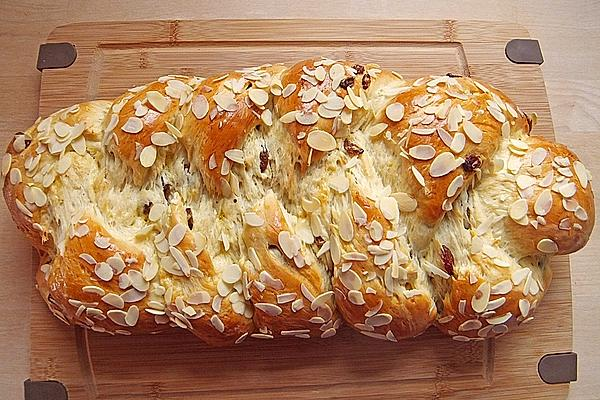

Osterzopf

Description
An Ostern kommt die ganze Familie zusammen und wird dabei kulinarisch verwöhnt. Damit ihr
während der ganzen Vorbereitungen mal einen Moment Luft holen könnt, empfehlen wir euch,
mindestens ein Gericht draußen auf dem
Grill zuzubereiten und das Frühlingswetter zu genießen. Unser Osterzopf ist dafür ideal
geeignet – ein frisches Gebäck, das so einfach wie genial ist.
- Milch
- Mehl
- frische Hefe
- Zucker
- Butter
- Vanillezucker
- Zitronenschale
- Ei
- Eiweiß
Steps
- 500g in eine große Schüssel geben und die frische Hefe in der Mitte platzieren.
Einen Teelöffel Zucker hinzugeben und 200 ml lauwarme Milch darüber gießen.
Anschließend vorsichtig verrühren und den Teig ca. 15 Minuten ruhen lassen.
In der restlichen Milch die Butter schmelzen.
- Das Milch-Butter-Gemisch und die übrigen Zutaten zum Hefeteig hinzugeben.
Mit einem Handrührgerät mit Knethaken alles auf höchster Stufe ca. 5 Minuten gut verkneten.
Den glatten Teig zudecken und bei
Zimmertemperatur bis zu einer deutlichen Vergrößerung gehen lassen. Den Teig anschließend
noch einmal gut durchkneten und in drei mengengleiche Teile aufteilen.
- Die drei Teile ausrollen, bis diese etwa 40 cm lange Stränge ergeben. Die Stränge nebeneinander
auf den Pizzastein legen und einen Zopf flechten. Erneut ruhen lassen, bis eine optische Vergrößerung zu sehen ist.
- Den Zopf mit einem Gemisch aus Eigelb und Milch bestreichen. Mandeln und Hagelzucker darüber streuen.
- Den Grill auf ca. 160°C borheizen und den Pizzastein mit dem Osterzopf darauflegen.
Darauf achten, dass der Brenner direkt unterhalb des Pizzasteins nicht aktiv ist – ansonsten könnte es zu
einer zu hohen Unterhitze kommen und den Teig verbrennen. Den Zopf etwa 30 Minuten goldbraun backen.
Back